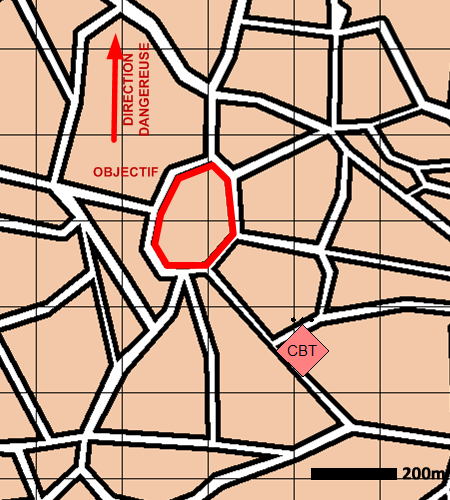

NIVEAU :Pion
ARME :ASYMETRIQUE
MISSION :Se Dissimuler
Objectif principal
- Se dissimuler
Modalités d'exécution
Lorsque l'objectif est une foule :
-
Rejoindre la foule ;
-
Suivre la foule dans ses déplacements.
Lorsque l'objectif est un bloc urbain :
-
Rejoindre le bloc urbain ;
-
S'y poster.
Schéma de modélisation

Paramètres obligatoires
Objectif (parmi les suivants)
Foule :
La foule dans laquelle se dissimuler.
Bloc urbain :
Le bloc urbain dans lequel se dissimuler.
Paramètres optionnels
Direction Dangereuse
Limite gauche / Limite droite
Lignes de début et fin de mission [LDM/LFM]